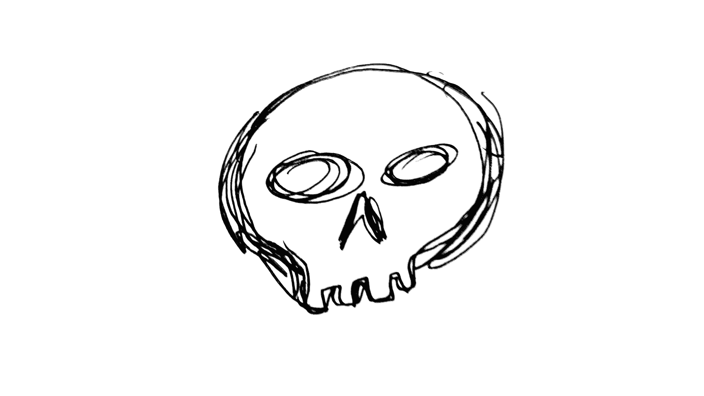

Каньон с мумиями
Сегодня ходили в хайк в каньон с мумиями. Из этических соображений сами мумии не покажу, но покажу каньон.
 Каньон
Каньон
 А примерно вот так выглядят пещеры в которых сидят мумии
А примерно вот так выглядят пещеры в которых сидят мумии
Отношение инков к умершим #
Если вы не в курсе, по всей латинской америке отношение к смерти несколько отличается от "нашего".
У инков (да и преинкских культур) когда взрослый и уважаемый член семьи помирал, его не закапывали, а делали из него мумию. Он как бы продолжал жить, просто в иной форме. И часто таких для таких мумий делали углубление в скале и сажали его туда. Но не чтобы забыть, а на хранение.
Каждая семья заботилась о своих мумиях и раз в год их выносили показывать, что они хорошо сохранились.
Когда инки присоединяли к своей империи какое-то племя, они делали хитрую вещь: они увозили самые уважаемые мумии в Куско. С одной стороны, они оказывали честь, ведь теперь уважаемый предок будет жить в столице. С другой, они как бы брали его в заложники и в случае чего был рычаг давления.
А как у Майа? #
У Майа было почти то же самое, только вместо мумий у них были скелеты. Они специально наливали в могилу жидкость, ускоряющую разложение, чтобы склелет был готов быстрее.
И потом выкапывали скелет по праздникам, сажали за стол. Всё как полагается.
Отголоски этой культуры мы видим сейчас как День Мёртвых в Мексике, когда люди одевают костюмы скелетов, да и настоящие скелеты по улицам таскают. Это просто их Родительский День.
И что любопытно - в мексиканских деревнях до сих пор сохраняется такое же отношение к скелетам родственников, как у Майа. Видел интервью археолога Эда Барнхарта (Ed Barnhart), который занимается раскопками много где. И он рассказывал про разное отношение к раскопкам у местного населения разных регионов мира.
Например, для проведения раскопок на территории индейских резерваций в США - приходится аккуратно просить старейшин, чтобы разрешили. И даже если разрешат, то будет довольно холодное отношение к процессу.
В мексиканских деревнях же если проводятся раскопки - они будут радоваться, что наконец увидятся с прадедушкой, будут помогать процессу, и даже устроят праздник в честь этого.
Даже более того, он рассказал историю, как они собирали коллекцию останков животных региона. И в одной из деревень к нему подошла маленькая девочка и предложила выкопать для изучения её собачку, которая недавно умерла. И была очень рада когда он согласился.
Вот такие отголоски великих цивилизаций Майа и Инков...